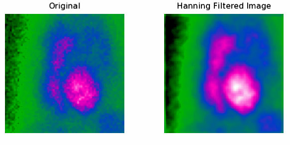

Sensors that capture images can introduce noise (extraneous information). So before you can properly analyze an image, you may need to filter out the noise.
IDL provides several ways to filter images . Within the frequency domain, windowing is a filter is applied to an image by multiplying the Fast Fourier Transform (FFT) of that image by the FFT of the filter to perform convolution.
The following example shows how to remove background noise from an image of a gated blood pool scan, using the following steps:
The example data is available in the examples/data directory of your IDL installation. The code shown below creates the following images, in a single window.

PRO example_remove_noise
; Import the image.
file = FILEPATH('abnorm.dat', $
SUBDIRECTORY = ['examples', 'data'])
orig_imageSize = [64, 64]
orig_image = READ_BINARY(file, DATA_DIMS = orig_imageSize)
displayImage = CONGRID(orig_image, 192, 192, /INTERP)
; Display the image.
img01 = IMAGE(displayImage, $
RGB_TABLE = 10, $
TITLE = 'Original', $
POSITION = [.10, .10, .40, .80], DIMENSIONS=[800, 400])
; Determine the forward Fourier transformation of the image
transform = SHIFT(FFT(orig_image), (orig_imageSize[0]/2), $
(orig_imageSize[1]/2))
; Apply a Hanning mask to filter out the noise
mask = HANNING(orig_imageSize[0], orig_imageSize[1])
maskedTransform = transform*mask
; Apply the inverse transformation to the masked frequency domain image
inverseTransform = FFT(SHIFT(maskedTransform, $
(orig_imageSize[0]/2), (orig_imageSize[1]/2)), /INVERSE)
inverseImage = CONGRID(REAL_PART(inverseTransform), 192, 192, /INTERP)
; Display the HANNING filtered image next to the original image display.
img02 = IMAGE(inverseImage, $
RGB_TABLE = 10, $
TITLE = 'Hanning Filtered Image', $
POSITION = [.5, .10, .80, .80], /CURRENT)
END